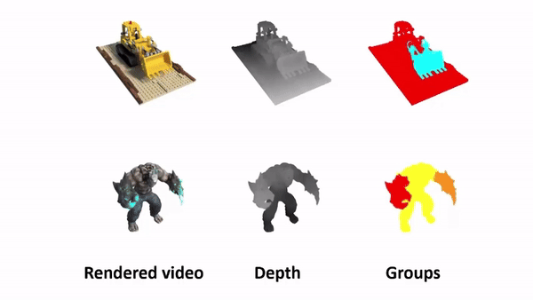
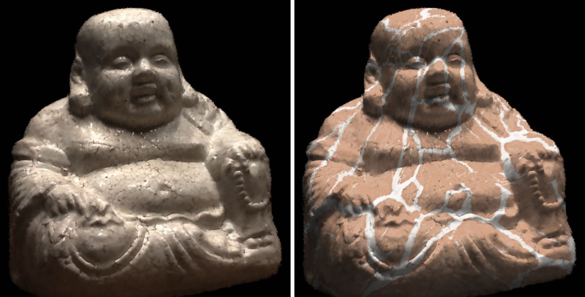

I am Vice President of Research and Development at Hillbot, where I mainly work on multimodal foundation models for robotics and embodied AI.
Prior to joining Hillbot, I was a research scientist at Adobe Research, working on neural 3D, 3D large models, and GenAI foundation models. Before that, I obtained my Ph.D. at University of California, San Diego, advised by Prof. Ravi Ramamoorthi.
My research lies at the intersection of computer vision, computer graphics, machine learning, and AI foundation models. My previous work has broadly covered 3D reconstruction, 3D generation, neural representations, view synthesis, relighting, appearance modeling, and appearance acquisition.
News
- NEW! [Feb, 2025] Four papers are accepted to CVPR 2025.
- NEW! [Jan, 2025] Two papers, one oral and one spotlight, are accepted to ICLR 2025.
- NEW! [Dec, 2024] I left Adobe and joined Hillbot as VP of Research and Development.
- NEW! [Sep, 2024] I will serve as an Area Chair for CVPR 2025.
- NEW! [Sep, 2024] Three papers are accepted to NeurIPS 2024.
- NEW! [July, 2024] Two papers are accepted to ECCV 2024.
- NEW! [Mar, 2024] I'm co-organizing the 1st workshop on 3D foundation models (3dfm.github.io) at CVPR 2024.
- NEW! [Feb, 2024] I gave talks at UIUC, University of Tübingen, and Oregon State University on 3D AI GenTech.
- NEW! [Feb, 2024] One paper is accepted to CVPR 2024 as a highlight presentation!
- NEW! [Jan, 2024] Four papers are accepted to ICLR 2024 and three of them are selected as spotlight presentations!
- [Nov, 2023] I finally opened my twitter account. Let's connect @zexiangxu !
- [Sep, 2023] Two papers are accepted to NeurIPS 2023.
- [Aug, 2023] One paper gets conditionally accepted to SIGGRAPH Asia 2023.
- [July, 2023] One paper gets accepted to ICCV 2023.
- [Mar, 2023] Two papers are accepted to SIGGRAPH 2023.
- [Feb, 2023] Two papers are accepted to CVPR 2023.
- [Dec, 2022] I will serve as an Area Chair for ICCV 2023.
- [Aug, 2022] One paper gets accepted to Siggraph Asia 2022.
- [July, 2022] Three papers get accepted to ECCV 2022; TensoRF gets 3 strong accepts in the final review.
- [Mar, 2022] One paper gets accepted to SIGGRAPH 2022.
- [Mar, 2022] Four papers (two oral presentations) get accepted to CVPR 2022!
- [July 30, 2021] One paper gets accepted to SIGGRAPH Asia 2021.
- [Jun 18, 2021] One paper gets accepted to TOG 2022.
- [July 22, 2021] MVSNeRF gets accepted to ICCV 2021.
- [Jun 8, 2021] One paper gets accepted to EGSR 2021.
- [May 21, 2021] I am a recipient of the 2021 Chancellor's Dissertation Medal of UCSD!
- [Mar 26, 2021] Two papers get accepted to SIGGRAPH 2021.
- [Mar 1, 2021] Two papers (both oral) get accepted to CVPR 2021.
- [July 31, 2020] One paper gets accepted to SIGGRAPH Asia 2020.
- [July 6, 2020] I joined Adobe Research as a research scientist.
- [July 2, 2020] Two papers (one spotlight) get accepted to ECCV 2020.
- [May 27, 2020] One paper gets accepted to EGSR 2020 (CGF track).
- [Feb 2, 2020] Two papers (one oral) get accepted to CVPR 2020.
- [Jul 29, 2019] One paper gets accepted to SIGGRAPH Asia 2019.
- [Mar 25, 2019] Two papers get accepted to SIGGRAPH 2019.
- [Nov 11, 2018] I'm honored to receive the 2019 Adobe Research Fellowship .
- [Aug 11, 2018] One paper gets accepted to SIGGRAPH Asia 2018.
- [Mar 26, 2018] One paper gets accepted to SIGGRAPH 2018.
- [Feb 27, 2017] One paper gets accepted to CVPR 2017.
- [Jul 23, 2016] One paper gets accepted to SIGGRAPH Asia 2016.
- [Sep 27, 2015] I started as a Ph.D. student at UC San Diego.
- [Aug 14, 2014] One paper gets accepted to SIGGRAPH Asia 2014.
Service
Selected Publications
*,† denotes equal contribution or advisory.



Hierarchical Neural Reconstruction for Path Guiding Using Hybrid Path and Photon Samples
SIGGRAPH 2021 (TOG)

Light stage super-resolution: continuous high-frequency relighting
SIGGRAPH Asia 2020 (TOG)
Deep Stereo using Adaptive Thin Volume Representation with Uncertainty Awareness
CVPR 2020 (Oral)